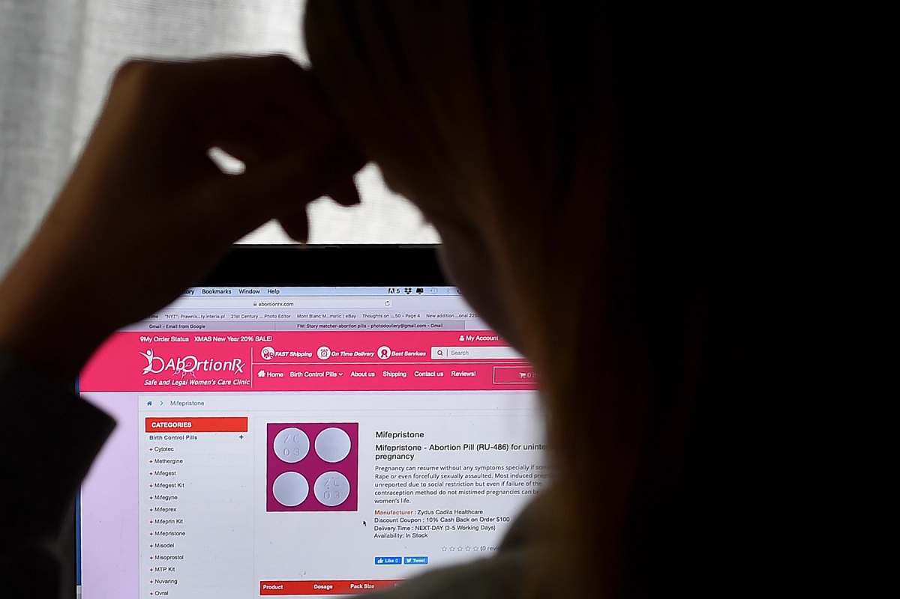

As some states have moved to fully ban abortion in the wake of Dobbs v. Jackson Women’s Health, new questions emerged about abortion pills: Do states have the legal authority to outright ban drugs that have been approved by the U.S. Food and Drug Administration?
An ongoing federal lawsuit in Mississippi could provide a glimpse at the answer. GenBioPro, the manufacturer of generic abortion pills, is fighting to overturn state restrictions that impede access to the abortion pill mifepristone. Their lawsuit, filed in 2020, hinges on an argument that many legal experts expect other states and advocates to make in the coming months: that Mississippi’s restrictions on medication abortion are unduly excessive, illegally pre-empting the FDA’s authority on drug safety.
How Advocates are Struggling to Help Those Who Seek Self-Managed Abortions
The FDA approved mifepristone for use in 2000. Over the next 18 years, more than 3.7 million women in the United States used the medication — sold under the brand Mifeprex — to end an early pregnancy. In 2016 the FDA reported mifepristone’s “efficacy and safety have become well-established by both research and experience, and serious complications have proven to be extremely rare.” Three years later the agency approved GenBioPro’s generic version.
Today medication abortion — a combination of both mifepristone and misoprostol — account for more than half of all abortions in the US, and fights over accessing the pills are expected to be among the most fiercely contested in the post-Roe era.
Just hours after the US Supreme Court overturned Roe, President Joe Biden gave a speech promising to protect a woman’s access to drugs approved by the FDA, including mifepristone. Biden announced he was directing the federal Department of Health and Human Services “to ensure that these critical medications are available to the fullest extent possible” and Attorney General Merrick Garland pledged to use the powers of the Justice Department to crack down on states trying to ban medication abortion.
But the Biden administration has stayed quiet on the Mississippi lawsuit. The White House declined to comment on the case, as did the FDA and DOJ. HHS did not return requests for comment. Mississippi has urged for a dismissal of the case. Judge Henry Wingate, a Reagan appointee on the United States District Court for the Southern District of Mississippi, requested that both parties provide written submission on the impact, if any, of the Dobbs decision on the lawsuit, and on Mississippi’s “trigger law” banning abortions, which is set to take effect next week. Submissions are due on Thursday.
A ruling in favor of Mississippi could have implications for other jurisdictions seeking to ban abortion pills in a post-Roe landscape.
How to Order Abortion Pills Online
If upheld, it “would also open the floodgates for states to substitute their judgment for FDA’s in other controversial areas of medicine — some of which we may be aware of — some of which we may not be,” said Delia Deschaine, a DC-based attorney who specializes in FDA regulation. “For example, if there were a group of individuals opposed to palliative care, a state could conceivably limit access to medications that are approved for use in that context. This then becomes a situation where the practice of medicine using pharmaceuticals unpredictably varies between states — which creates its own host of public health issues.”
Through the passage of the Federal Food, Drug, and Cosmetic Act in 1938, Congress empowered the FDA as the sole agency to approve drugs in the US. It’s responsible for reviewing a drug’s safety, weighing its risks and benefits, and regulating appropriate conditions for safe and effective use.
Even though many reproductive health experts — including the American College of Obstetricians and Gynecologists — actually say the FDA has too many restrictions on mifepristone (for example, only certified pharmacies or providers can dispense the drug) everyone must abide by the agency’s determinations.
But many red states, including Mississippi, have passed laws that go even further than FDA’s rules around mifepristone. For example, Mississippi requires a doctor to physically examine a patient prior to offering the drug, and for patients to ingest the medication “in the same room and in the physical presence of” the physician who gave it to them, rather than taking the medication at home.
Experts say there is a “strong, though legally uncertain” argument that the Supremacy Clause of the US Constitution gives the federal government authority over these conflicting state rules. Indeed, GenBioPro has argued Mississippi’s law is “an impermissible effort by Mississippi to establish its own drug approval policy and directly regulate the availability of drugs within the state.”
This idea — that federal regulation of drugs would take precedence, and a state cannot ban a drug that has been given federal approval — is known as the preemption argument.
How Ectopic Pregnancies Could be Treated After Roe v. Wade's Overturn
For now, legal scholars say it’s unclear how preemption arguments will play out in court. Courts often grant deference to the FDA, though there are relatively few examples involving drugs. The main precedent is a 2014 case where a federal judge struck down a Massachusetts effort to restrict the opioid Zohydro, since the FDA had approved the painkiller.
“The fact that this case relates to a medication that is used in abortion is one reason we might see the district court take a different stance than other courts on this issue,” said Deschaine. Anti-abortion advocates maintain that states have the authority to restrict or ban mifepristone, because states can regulate medical practice, and the FDA lacks the authority to regulate abortion. Legal scholars also note that Congress has never explicitly said that FDA drug approval supersedes state law, though it has expressed that for medical devices.
While the DOJ declined to comment on the GenBioPro case, Attorney General Garland’s recent public statements suggest the agency is thinking about the preemption argument. “The FDA has approved the use of the medication Mifepristone,” Garland said Friday, adding that, “states may not ban Mifepristone based on disagreement with the FDA’s expert judgment about its safety and efficacy.”
Gwyn Williams, an attorney representing GenBioPro, told Vox that in response to the judge’s request, their team submitted a statement reiterating their previous position that the legal issues decided by the US Supreme Court in Dobbs “do not affect GenBioPro’s claims, which are based on federal preemption and not on constitutional rights to privacy or abortion.” Williams says they expect the judge to issue his decision on dismissing the case soon.
Paul Barnes, a Mississippi Assistant Attorney General representing the state, declined to comment.
Greer Donley, a University of Pittsburgh law professor who specializes in reproductive law, told Vox that one reason why the court has been “pretty delayed” in issuing any rulings could be because the judge “might be trying to look for an opportunity to kick the case.”
If Mississippi fully bans abortion statewide — which it’s set to do next week, though that trigger law is now being challenged in court — then the state’s mifepristone restrictions might become moot. “If there’s a statewide ban, then I can imagine the defendant saying the lawsuit is moot now because all these laws that regulate abortion providers are subsumed by the bigger abortion ban generally,” said Donley.
But Donley says the preemption argument would still have broad merit, since the FDA still acts as a gatekeeper.
“To earn the right to sell a drug product, manufacturers must produce years, if not decades, of expensive, high-quality research proving that the drug is safe and effective,” she wrote, along with law professors David Cohen and Rachel Rebouché in a legal article cited in the Dobbs dissent. “If they are successful, they can sell their product in every state; if unsuccessful, they cannot sell their product anywhere. If a state were to ban abortion, it would in effect ban the sale of an FDA-approved drug.”
In other words, if it is impossible to comply with both state and federal law at the same time, there remains a plausible preemption argument.
Deschaine, the attorney who specializes in FDA regulation, thinks upholding state restrictions on abortion pills could certainly affect whether other drug companies seek to go through the FDA approval process in the future.
“The incentives for developing FDA-approved drug products are strong, but those start to erode the more fractured the regulatory scheme for these products becomes,” she said. “If a company does not believe that it will be able to market its product in all US states/jurisdictions, then it may not be willing to assume the risk of pursuing the drug approval pathway. Indeed, even absent those restrictions, that pathway is very costly and uncertain.”